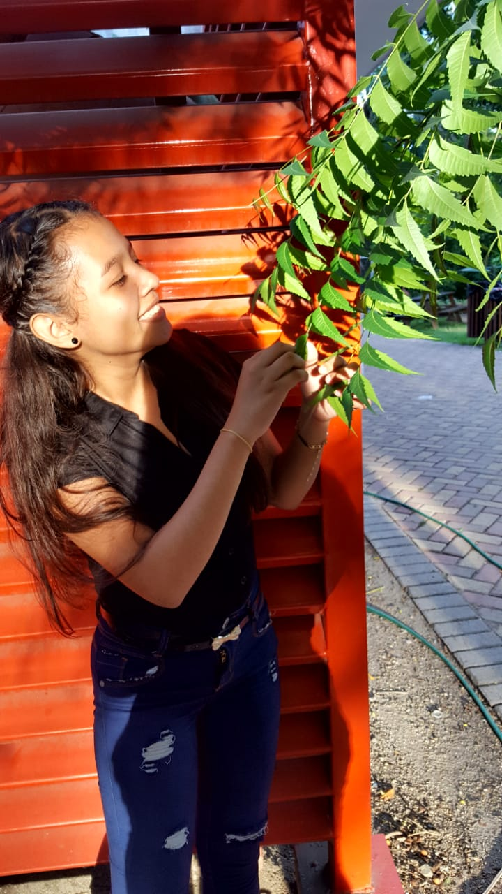

Lugar: La colonia

Creditos: Nicoll Elvir
Mi nombre Es Anyi Rosmery Perdomo Cruz. Naci el 29 de Diciembre del 2001. Actualmente tengo 17 años, actualmente vivo con mis padres y tengo una hermana llamada Ashley Sarahi Perdomo.

A la edad de 5 años estudie en el Jardin San Martin de Porres, en ese kinder jugabamos muchos juegos divertidos, saliamos a comer, habian dias que bañabamos en unas piscinas, tambien salimos a un lugar donde habian helicopteros era el aerpuerto ese dia nos celebraron el dia del niño, andaba con mi papa. Y En una ocasion nos lleveraon al planetario, subimos en un ascensor, fue mi primera vez, tambien salimos a pizza hut y nos divertimos, Cuando llego el 14 de septiembre recuerdo que iba a salir de palillona con mi prima nicoll, y no sali porque me enferme, fue un gran pesar porque era la unica vez que iba a salir de palillona, y tambien se quedaron con los gastos.
Hice mi primaria en el Centro Basico Dr. Presentacion Centeno. Recuerdo que desde que estaba en primer grado iba a la 20 calle del barrio cabañas y aveces me iba a recoger mi papa, En esa escuela corrian muchos rumores sobre de que habia una mano peluda, y de que en los baños salian lagartijas, recuerdo que habian unos toboganes en forma de elefantes y que decian que ellos se movian, en fin cada dia eran historias nuevas A la edad de 8 años salimos a comer a power chicken con unas compañeras de mi mama, la pasamos bien.
Cuando iba a entrar a sexto grado nos mudamos de casa y la escuela la hicieron en la 13 calle del barrio cabañas justamente cerca de donde nos habiamos mudado, entrar a ese colegio fue algo maravillos y como siempre se decian cosas del colegio, decian que estaba construido sobre un sementerio, etc. Mi sexto grado fue una hermosa experiencia ya que estaba muy emoncionada por entrar a ciclo, hice muchas cosas en sexto, una de ellas fue pasar momentos agradables con mis compañeros y siempre colabore en lo que pude. Una vez Entrando a ciclo estaba super nerviosa porque no sabia como me iba a ir, recuerdo que los primeros dias estaba nerviosa porque pensaba que los maestros eran enojados, pero no fue asi, tuve una maestra que llego a mediados del año ella se llama Iris Enrique y Recuerdo que con ella obtube mi primer 100 en Español y estaba emocionada porque era en septimo. recuerdo que en ciclo participaba mucho en actividades y en clases
Cuando entre a noveno grado estuve con la maestra Olga Margot, ella fue una excelente maestra, ella me mostro a trabajar en orden,con disciplina, me guio a ser mejor en lo que hacia, me gustaba estar con ella porque a pesar de que tiene un voz fuerte y es estricta es buena persona cuando uno se la sabe ganar y ya para finalizar mi ciclo el 15 de septiembre sali de Escolta de Bandera . Mi Noveno grado fue hermoso, todo el grado eramos unidos. Luego de eso se llego el momento de la graduación y todos estabamos felices por ese logro.
Al finalizr mi graduacion mi familia y yo nos fuimos para el pueblo a festejar mis 15 años, fue un sabado mi cumpleaños me la pase super super bien, al final nos la pasamos bien.
Antes de entrar a carrera tenia miedo porque se trataba de conocer un colegio nuevo, personas y docentes nuevos. Les dije a mis padres que no queria estudiar en el instituto Jose Trinidad Reyes, les dije que queria estudiar en el intae pero ellos me dijeron que no porque estaba lejos y al final me quede estudiando en el Instituto Jose Trinidad Reyes, La carrera que queria estudiar era informatica pero me presentaron la carrera de Robotica nos dijeron que era muy buena en el campo laboral, nos comentaron que se harian competencias nacionales e internacionales pero para poder ingresar teniamos que haber hecho un examen de admision. Hice el examen de admision con una persona muy importante para mi y fue como mi amiga seilyn ella lo hizo primero y saco un execelente puntaje y yo lo hice con ayuda de ella mi puntaje fue excelente tambien.
Cuando iniciamos a clases todo iba muy bien me agradaron lo maestros. A mediados del año me cambie de puesto me hice amiga de las demas compañeras confieso que estaba aterroriza porque pase 8 años con seilyn pero descubri que eran buenas personas en todos los aspectos estando en segundo de carrera Ya no hablaba con seilyn y salia a comer con Daryelin y Dalis poco a poco me encariñe de ellas aunque me sentia rara porque solo llegue a meterme asi como si nada.
Bueno y eh aqui estoy en ultimo de carrera me agradan los maestros y espero graduarme con excelentes notas.